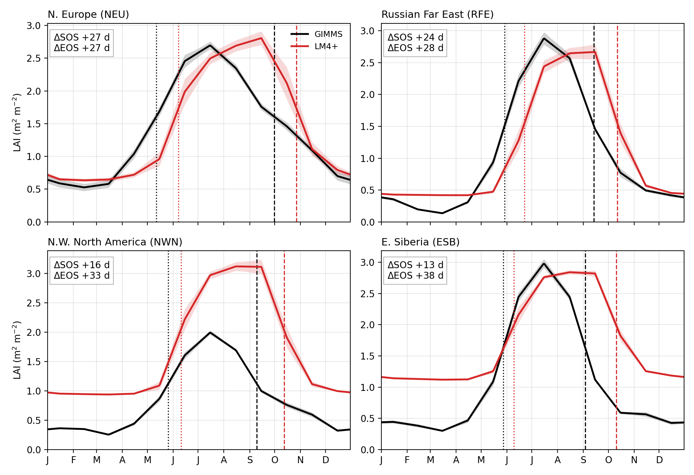
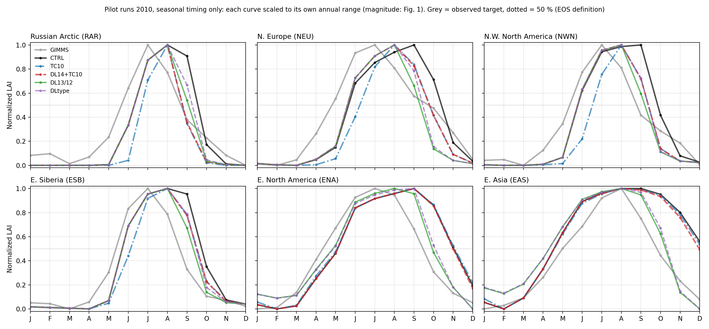
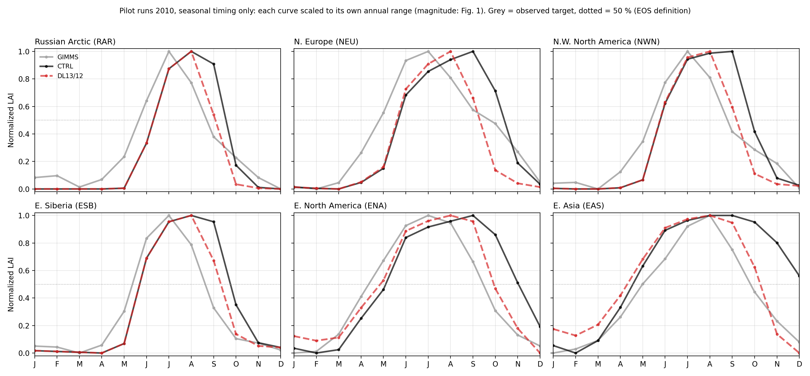
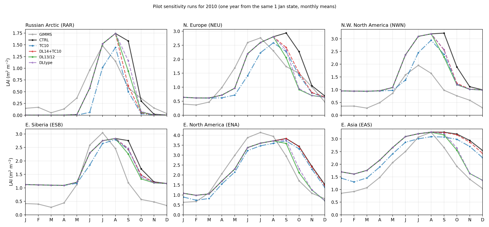
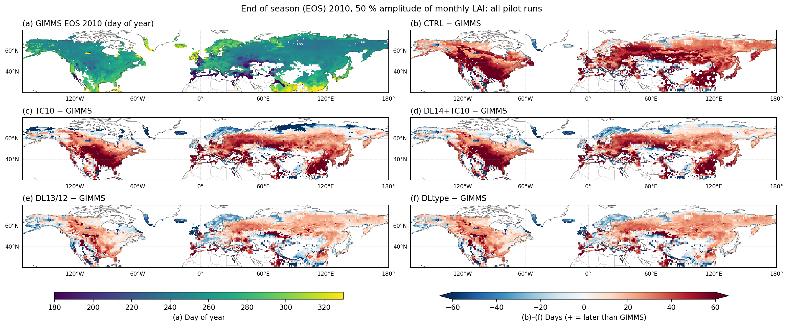

| 실험 | 변경 내용 | 비고 |
|---|---|---|
| CTRL | 현재 설정 (낙엽 문턱 5 °C: 낙엽송·C3 풀) | 기준 |
| TC10 | 낙엽 문턱 5 → 10 °C (낙엽송·C3 풀) | 설정만 변경. 봄 잎 나기 문턱도 함께 바뀜 |
| DL14+TC10 | 낮 < 14 h 이고 평활기온 < 10 °C 이면 낙엽 (낙엽송·C3 풀) | 코드 패치 (낮 길이 조건 추가) |
| DL13/12 | 낮 < 13 h (낙엽송·C3 풀) / < 12 h (활엽수), 기온 상한 20 °C | 패치, 활엽수 포함 |
| DLtype | 낙엽송 13.5 / C3 풀 12.5 / 활엽수 11.5 h, 기온 상한 20 °C | 관측 EOS 시점의 유형별 낮 길이에서 정함 |
| 9–10월 과잉 LAI 해소율 | NWN | ESB | RFE | ENA | WCE | EAS |
|---|---|---|---|---|---|---|
| TC10 | 45 % | 21 % | 54 % | 9 % | 5 % | 21 % |
| DL14+TC10 | 38 % | 20 % | 50 % | 0 % | 6 % | 2 % |
| DL13/12 | 49 % | 32 % | 84 % | 60 % | 116 %* | 40 % |
| DLtype | 40 % | 22 % | 63 % | 46 % | 86 % | 32 % |
| EOS 편차 (모델 − GIMMS, 일) | CTRL | TC10 | DL14+TC10 | DL13/12 | DLtype |
|---|---|---|---|---|---|
| 50–70°N (4,716 격자) | +33 | +9 | +16 | +10 | +15 |
| 40–50°N (1,606) | +42 | +38 | +34 | +8 | +12 |
| 20–40°N (1,317) | +27 | +26 | +21 | 0 | +1 |

Fig. A. 1982–2010 기후값 LAI 계절 곡선 (GIMMS vs LM4+ CTRL), 6개 AR6 지역. 점선 = SOS/EOS(진폭 50 %). 모든 지역에서 잎 지는 시기가 28–70일 늦음.

Fig. B. 2010 pilot 실험, 정규화 LAI ((LAI−최소)/(최대−최소)) — 시기만 비교. 회색 = GIMMS(목표). DL13/12(초록)이 한대·온대 모두에서 가을 하강을 관측 쪽으로 가장 많이 당김. 봄 곡선은 낮 길이 실험 모두 CTRL과 겹침.

Fig. B′. Fig. B에서 GIMMS·CTRL·최선 실험(DL13/12)만. 한대(RAR·ESB·NWN)는 한 달가량 당겨졌으나 관측보다 2–3주 늦음이 남고, 온대(ENA·EAS)는 관측에 거의 도달, NEU는 과보정. 한대 봄은 CTRL과 겹침. ENA·EAS 1–3월이 높아진 것은 겨울 최저값 변화에 따른 정규화 효과로 추정(확인 필요).

Fig. C. 같은 실험의 절대 LAI (m² m⁻²). 크기 편차(전구 MJJAS +41 %)는 phenology 수정으로 바뀌지 않음 — 시기만 바뀜.

Fig. D. 2010 EOS: (a) GIMMS, (b)–(f) 각 실험 − GIMMS (일, 빨강 = 늦음). DL13/12(e)에서 북미·동아시아 온대의 붉은 영역이 대부분 사라지고, 서유럽·북유럽은 파랑(과보정).